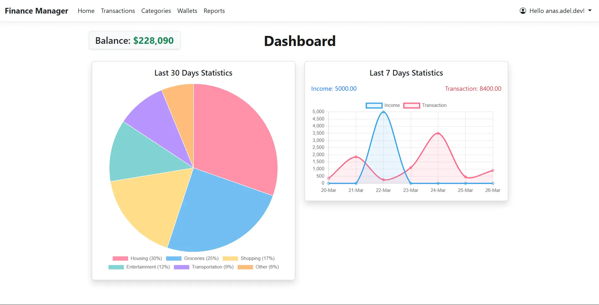
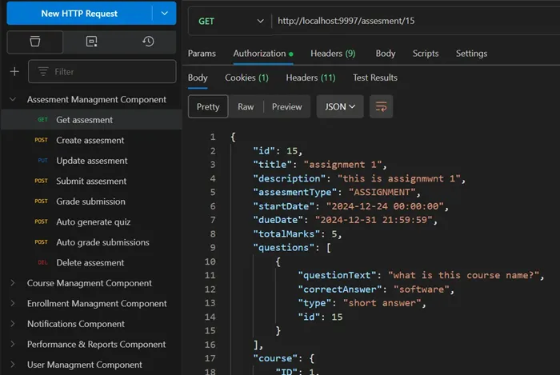
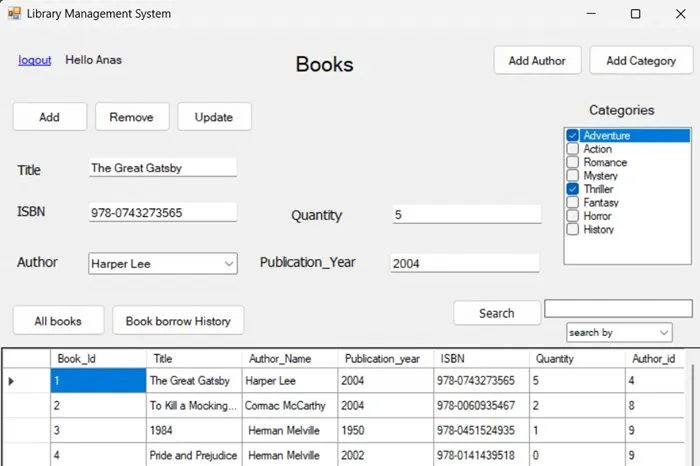

Anas Adel
Software Developer
I'm a backend-focused Software Developer with a strong foundation in DSA, solving 200+ problems.
I value building production-grade systems, prioritizing reliability, performance, and maintainability.
Developed RESTful APIs and web applications with ASP.NET, Django, Spring Boot, and SQL Server.
Projects

Finance Manager - ASP.NET Core
A personal finance manager for tracking income and expenses. Engineered for high performance using SQL indexing & caching, ensuring data integrity with atomic db transactions, scheduling email reports via Hangfire, and following a clean layered architecture.
Project Details
Education Web API - Spring Boot
Collaborated in a team of 6 to develop this education system. I built the Assessment Component, implementing automated grading, quiz generation, and submission workflows. We followed RESTful standards and RBAC to keep the system modular and maintainable.
Project detailsLibrary Web App - Django
A full-stack web application where admins can manage books (add, update, remove), and users can search by title, author, or category, then borrow and return the books. Built with Django for the backend and HTML, CSS, and JS for the frontend
Project Details
Library Desktop App - .NET
This app is the Desktop version of the previous library web app. It has the same functionalities of the web app with some added functionalities:- Borrowing History Tracking, books in multiple categories, and more. Built using .NET (C#) Windows Forms and linked with SQL server database.
Project DetailsAlgorithmic & Problem Solving Projects - C++
- Implemented 15+ core algorithms: sorting, searching, graphs, greedy, DP
- Built data structures: linked lists, AVL/Red-Black/B trees, suffix arrays, etc.
- Solved 200+ algorithmic problems across LeetCode, HackerRank, & others
Low-Level System Projects - Java & C++
- Recreated Linux commands and simulated CPU/thread schedulers (Java)
- Built MPI/OpenMP programs for Caesar cipher and matrix operations (C++)
- Developed a number system converter between any bases from 2 to 16 (MIPS)
Skills
Backend Development
Software Architecture
Databases
Programming & Systems
CS Fundamentals
Tools & DevOps
About Me
I am a problem solver and analytical thinker who enjoys working through logic-based challenges and building real-world applications. I regularly solve LeetCode problems to sharpen my problem-solving skills. I have studied over 20 essential data structures and algorithms and studied algorithms analysis and design, which helped me build a strong foundation in this area.
I specialize in backend development because I am passionate about building robust, scalable logic and architecture. While I can collaborate on the frontend, my true strength lies in the backend designing secure APIs, implementing Clean Architecture, and optimizing database performance through indexing and caching. I take pride in ensuring data integrity (ACID) and writing maintainable, production-ready code.
I have worked with multiple frameworks and tools (like ASP.NET, Spring Boot, Django, ReactJS, Git/GitHub, Postman, and more) as shown in my projects. This shows my ability to adapt and learn new technologies easily. I am eager to learn and improve with every project I work on.
Education
Faculty of computers and artificial intelligence — Cairo University
Computer Science Department
2022 (enrolled) - 2026 (expected graduation)
Languages
- Arabic — Native
- English — fluent
- German — Basic